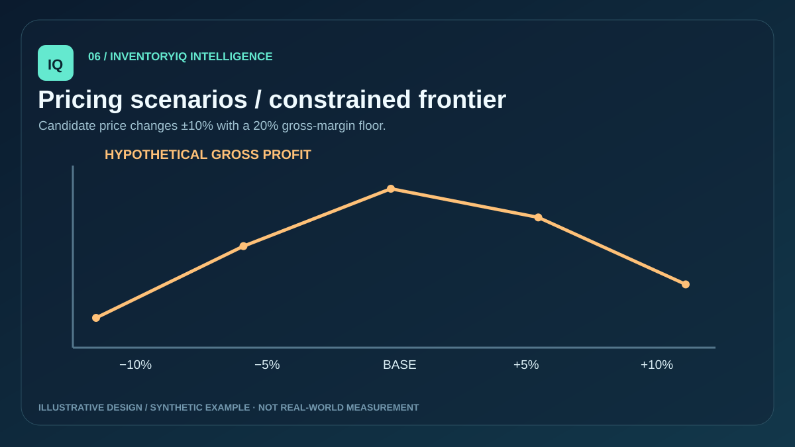
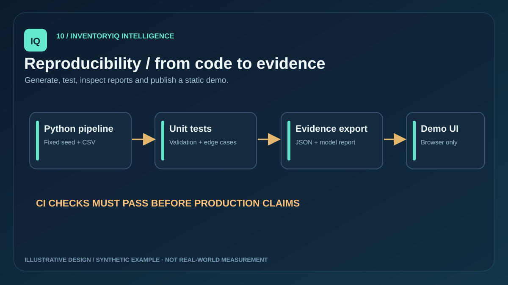

01 — Validate
Generate synthetic daily units, pricing, costs and promotion flags. Enforce date/SKU uniqueness, chronology, numeric constraints and a fixed catalog.
Predictive Inventory & Dynamic Pricing — an auditable, review-first synthetic retail analytics prototype.

Forecast uncertainty makes stockout and excess-inventory decisions difficult. Pricing introduces additional margin constraints and cannot safely be optimized from unverified correlations. This project illustrates how to surface assumptions and preserve human review.
Generate synthetic daily units, pricing, costs and promotion flags. Enforce date/SKU uniqueness, chronology, numeric constraints and a fixed catalog.
Compare seasonal naive with weekday smoothing on four expanding folds. Use a sealed 28-day test for MAE, WAPE and sMAPE, then forecast 28 future days.
Estimate lead-time demand, volatility-based safety stock, reorder point, stock cover and conditional order quantities under illustrative stock balances.
Explore ±10% price changes with a 20% modeled gross-margin floor and manually adjustable assumed elasticity. Scenarios are never applied.
Inspect Python test cases, API source, model card, notebook examples and the dashboard. Diagram values are explanatory illustrations; numerical model reports are computed by the Python pipeline.




Real retail feeds, validated achieved service level, causal price elasticity, externally evaluated forecast uncertainty, real business lift, production authentication, native Power BI PBIX and a hosted API are not established. A real rollout needs domain validation and authorized integrations.